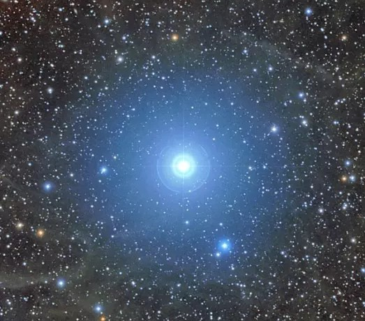

Introduction
Polaris is known as the North Star because it is always located in the north. Polaris is located very close to the celestial pole, which is the point in the sky where the north rotational axis points. As the Earth rotates, the stars around seem to be making circles around Polaris. Polaris also rotates in a circle, however, this circle is very small and unnoticeable to us because it is located so close to the celestial pole. The farther you are from the celestial pole, the larger the circle it has to travel in the sky.
Latitude, Right Ascension, and Declination
When viewing Polaris, the angle that you turn your head upwards to look at Polaris, is exactly the same as your latitude (north-south position on the Earth). So, different places in the world will see Polaris at different heights in the sky. An observer located at the latitude 65 degrees will see Polaris in the north, 65 degrees above the horizon. Meanwhile an observer in the North Pole at latitude 90 degrees will see Polaris directly above them in the sky. Polaris is located at RA 2h 41m 39s and Dec. +89 degrees 15’ 51”.
Physical Characteristics
Polaris is a yellow supergiant star that is a multiple star system, with two stars nearby. Polaris’ apparent magnitude is 1.97 and its absolute magnitude at 10pc is -3.64. To put this into perspective, the sun has an absolute magnitude of about 4.83. The lower the absolute magnitude, the brighter the star, so Polaris is significantly brighter than the sun. Polaris’ luminosity is also 2,634.12 times the sun’s luminosity.
Precession and Its Effect on Polaris
The Earth is spinning around an invisible axis, which is on a tilt. Currently, the axis is pointing towards the star Polaris. However, over the years, Polaris will no longer be the North Star. This is due to the precession of the Earth. Precession of Earth is when the Earth is “nudged” or “wobbled” to point into a different direction. This “wobble” or “nudge” causes the Earth’s axis to trace out a circle which takes about 26,000 years to complete only once. In the year 3,000 B.C., the North Star wasn’t Polaris. Rather, it was a star named Thuban (also known as Alpha Draconis) and about 13,000 years from now, the North Star will be Vega instead of Polaris.